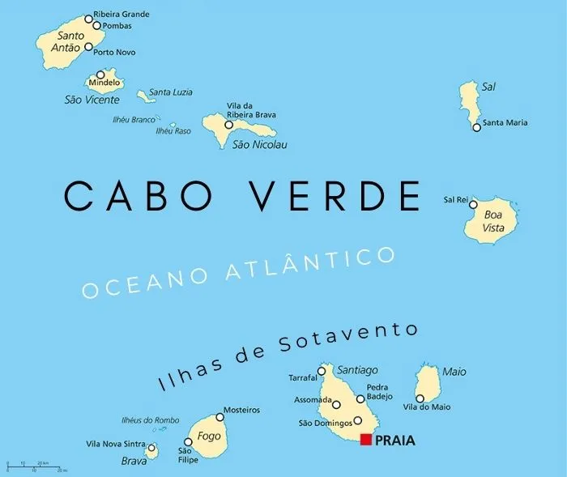

A geografia de Cabo Verde é caracterizada principalmente pelo clima e vegetação típicos de um ambiente tropical seco. O arquipélago é formado por cerca de dez ilhas de origem vulcânica que estão dispostas na porção central do oceano Atlântico, logo nas proximidades da costa africana.
A geologia local propiciou um relevo bastante montanhoso, marcado pela ação vulcânica, além de um litoral recortado, composto por muitas praias. O isolamento geográfico do país culminou na presença de diversas espécies de animais e plantas atreladas ao clima tropical seco, visto que no território cabo-verdiano predominam as elevadas temperaturas e as escassas precipitações.
